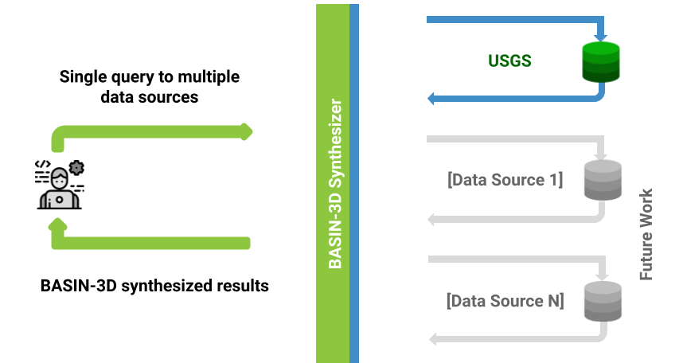

BASIN-3D Concepts¶
A brief overview of BASIN-3D terms and concepts¶
Plugins (aka, data sources)¶
BASIN-3D translates queries of BASIN-3D’s data model to queries of individual data sources whose plugins have been registered.
A plugin is a software component that extends functionality. In this case, a plugin will add access to data sources desired for synthesis. A data source is where the data originates.
A plugin to USGS Daily Water service is available with BASIN-3D. Future releases will provide additional plugins and custom plugins can be built.
BASIN-3D allows scientists to make a single query to multiple data sources.
BASIN-3D accesses data sources on-demand. Plugins map the data source query and return (meta)data to BASIN-3D’s data model (see Observations, Monitoring Features, Observed Properties below).
Observations (aka, data)¶
BASIN-3D is designed to support diverse types of data, which we call observations. Examples of observation types include: time series, images, gridded layers, results of lab analyses, qualitative descriptions. BASIN-3D currently supports time series observations.
- Features of Interest
Observations typically describe an aspect of something. Features of interest include organisms or physical entities.
- Monitoring Features
Features of interest are often physical entities more commonly referred to as locations or samples, which we collectively call monitoring features:
- Observed Properties
The aspect of something that the observation describes is called the observed property; these are variables.
IMPORTANT: To query many observation types using BASIN-3D, monitoring features and observed properties must be specified.
- Additional Metadata
Observations have many other metadata, including when it occurs in time. See XXX for additional metadata available for observations.
Monitoring Features (e.g., Locations and Samples)¶
Monitoring features are what an observation is characterizing.
- Feature Types
Data often characterize physical entities. In Earth Science monitoring features can be categories of feature types such as basins, watersheds, and points.
BASIN-3D is currently bundled with feature types for hydrological earth science data (See xxx to get a list of these feature types). However, the design allows for the definition of other domain specific feature types.
- Parent Features
Monitoring features can be organized into hierarchies to enable queries by parent features:
- Additional Metadata
Monitoring features have metadata that include their geo-reference. See XXX for additional metadata available for monitoring features.
Observed Properties (e.g., Variables)¶
An observed property is the aspect of a monitoring feature being characterized by the observation.
Observed properties are commonly called variables. Examples include stream discharge, air temperature, aluminum concentration
BASIN-3D uses a defined list of observed properties and their units to which data source variable names and units are mapped. By default, BASIN-3D uses a list of variables commonly used in hydrological-focused Earth Science.